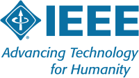
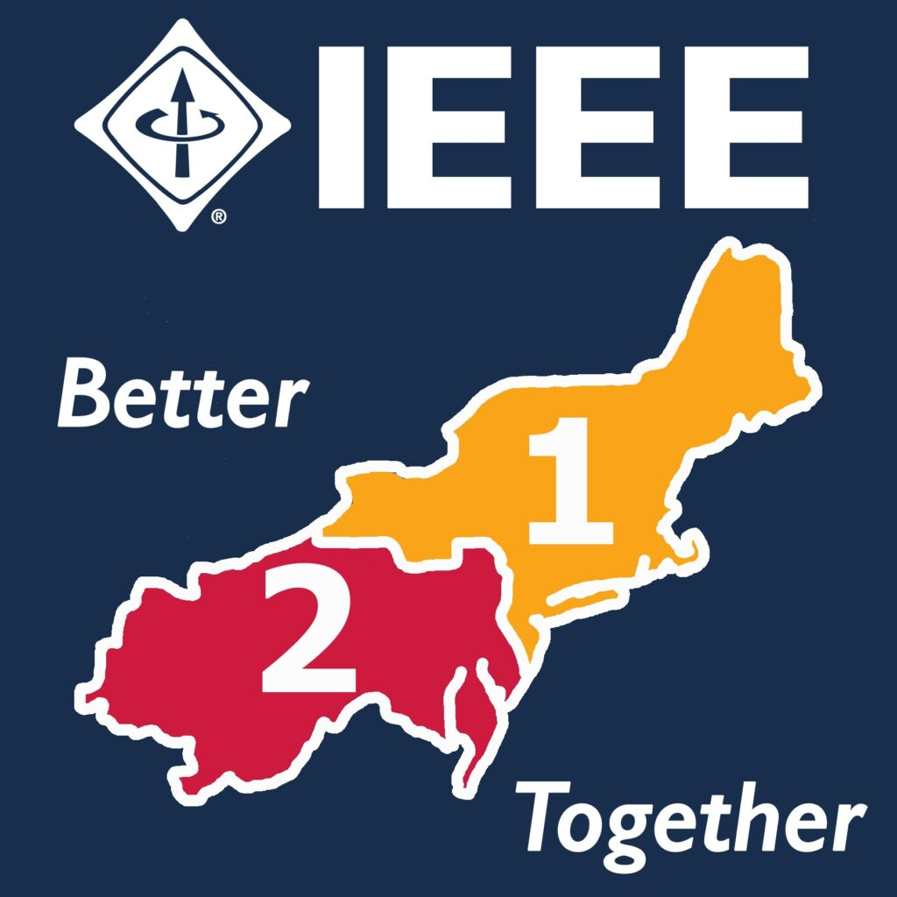

| Home | Registration | Program | Directions | Resources |
In this hands-on session, participants will explore cloud-based systems and integrate advanced AI tools, including generative AI, to develop and control robotic applications using the quadruped Mini Pupper (robot dog). Blending theory with practical experience, participants will learn to manage robotic operations from design to deployment, leveraging AWS cloud services, Python programming, the Robot Operating System (ROS), and AI technologies.
During the workshop, participants will program the robot to follow a line and perform dance routines synced to music of their choice. The event promises to be a fun, engaging experience, designed to spark interest in robotic programming. Participants will also have the chance to apply their newly acquired skills in a Mini Pupper competition at the IEEE R1/R2 Student Conference.
Mini Pupper by MangDang is an affordable, open-source four-legged robot priced under $1,000 — making it one of the most accessible quadruped platforms for education and research. Despite its compact size, Mini Pupper is a fully capable robotics platform that supports ROS2, computer vision, SLAM, and can be integrated with Google Gemini for AI-powered interactions and natural language control.
With its low cost and powerful capabilities, Mini Pupper is the ideal tool for universities looking to bring hands-on AI and robotics education to their students without breaking the budget.
This workshop covers the fundamentals you need to prepare for the Mini Pupper Competition:
After completing this workshop, you will know exactly what is needed to bring a hands-on robotics and AI class back to your university. You’ll leave with a clear understanding of curriculum structure, hardware requirements, software setup, and teaching strategies to train your students with interests in AI and robotics using the Mini Pupper platform. Whether you plan to offer a semester-long course, a weekend bootcamp, or prepare a competition team, this workshop gives you the complete playbook to get started.
This workshop is designed for IEEE student branch faculty advisors in Regions 1 and 2 who are preparing their student teams for the IEEE R1/R2 Student Conference Mini Pupper Competition. Whether you have prior robotics experience or are new to ROS and quadruped robots, this workshop will equip you with the knowledge and confidence to guide your students.
Dr. Li Bai, Department Chair of Electrical and Computer Engineering at Temple University, is a Principal Investigator leading research in AI-driven robotics, distributed information systems, federated learning, and cybersecurity. His work integrates ROS2, AWS, and Google Gemini for intelligent automation. A Senior Member of IEEE, Dr. Bai currently serves as the IEEE Region 2 Student Activities Coordinator (SAC) and is passionate about STEM outreach, working with high school teachers to develop robotics programs that inspire the next generation of engineers.
This workshop is organized in collaboration with MangDang and the IEEE R1/R2 Student Activities Committee. For questions or more information, please contact the organizing committee.
|  |  |